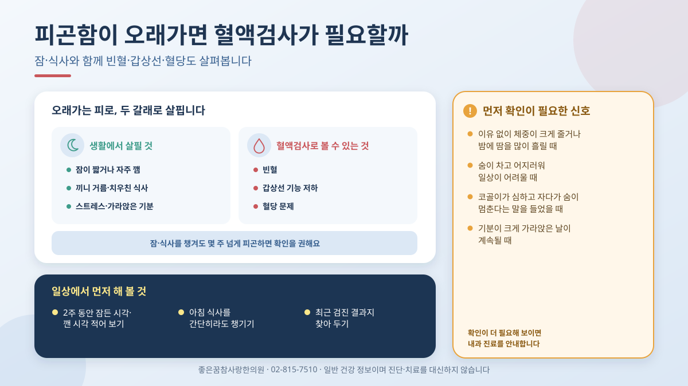

이종호 한의사 감수좋은꿈참사랑한의원 대표원장 (한의사 면허번호 19769)발행 2026-11-23 · 수정 2026-11-26
이 글의 차례
오후 3시, 모니터 앞에서 같은 문장을 세 번째 읽고 있습니다. 어젯밤 일곱 시간을 잤는데도 눈꺼풀이 무겁고, 엘리베이터를 기다리는 그 짧은 시간에도 벽에 기대고 싶어집니다. 이런 피곤함이 몇 주째 이어진다면, 저는 잠과 식사를 살피는 일과 함께 혈액검사로 빈혈이나 갑상선, 혈당 같은 다른 원인이 없는지 한 번 확인해 보시길 권합니다.
특히 이유 없이 체중이 줄거나, 숨이 차거나 어지럽거나, 추위를 유난히 타는 변화가 함께 있다면 미루지 않는 편이 좋습니다.
진료실에서 이런 말씀을 자주 듣습니다. 피곤한 게 병은 아니잖아요, 하시며 웃으시는데 눈 밑이 어둡습니다. 살림을 하고, 일을 하고, 누군가를 챙기느라 정작 본인이 밤에 몇 번 깼는지 셀 겨를도 없이 지내 오신 분들입니다.
그런 분이 어느 날 시간을 내어 제 앞에 앉으십니다. 어깨가 아프다는 말씀으로 시작해서, 제가 양손을 내어 달라고 하고 이런저런 이야기를 나누다가 비로소 요새 잠을 통 못 잤다는 말이 나옵니다. 저는 그제야 알게 됩니다. 이분에게는 몸을 돌보는 일도 따로 시간을 내야 가능한 일이었구나, 그동안 이 몸으로 참 많은 일을 하셨구나 하고요.
기운이 없으니 보약을 지어 달라고 하시는 분도 많습니다. 그럴 때 저는 약보다 진맥과 상담이 먼저라고 말씀드립니다. 피로는 잠이 모자라서, 일이 많아서, 끼니가 치우쳐서, 마음이 지쳐서 오기도 하고, 빈혈이나 갑상선 같은 질환 때문에 오기도 합니다.
무엇이 기운을 빼고 있는지 알아야 무엇을 할지 정할 수 있고, 녹용이나 공진단처럼 이름난 약도 모든 분께 같은 방식으로 권하지 않습니다.
피곤함에도 여러 얼굴이 있습니다
같은 피곤함이라도 들여다보면 사정이 다릅니다. 일곱 시간 넘게 자도 자주 깨거나 얕은 잠이 이어지면 오래 누워 있어도 개운하지 않습니다. 코를 심하게 골고 자다가 숨이 멎는 것 같다는 말을 들으셨다면, 밤마다 잠이 끊기고 있을 수 있어 수면 상태를 먼저 확인해 보셔야 합니다. 졸린 것과 기운이 없는 것은 비슷해 보여도 따로 여쭙는 이유입니다.
끼니를 거르거나 한쪽으로 치우친 식사가 이어지면 오후에 기운이 쉽게 떨어집니다. 스트레스와 가라앉은 기분이 몸의 피로로 먼저 느껴지기도 합니다. 2주 넘게 거의 매일 기분이 가라앉거나 좋아하던 일에도 흥미가 없다면, 몸만이 아니라 마음도 함께 살펴야 할 때입니다.
혈액검사로 확인할 수 있는 원인도 있습니다. 빈혈이 있으면 조금만 걸어도 숨이 차거나 어지럽고 얼굴이 창백해 보이기도 하며, 생리량이 많은 분이라면 더 눈여겨봅니다. 갑상선 기능이 떨어지면 추위를 많이 타고 체중이 늘며 붓거나 변비가 생기기도 합니다. 혈당에 문제가 있으면 갈증이 심하고 소변이 잦아지거나 이유 없이 체중이 줄기도 합니다.
드시는 약도 살핍니다. 몸이 약해지면 무엇이라도 더 먹으면 좋아질까 싶은 마음이 들어, 약과 영양제가 한 움큼씩 늘어나는 분들이 있습니다. 약이 여러 가지일 때는 졸림이나 어지럼이 겹칠 수 있어 저는 드시는 것을 모두 가져와 달라고 부탁드립니다.
꼭 필요한 것을 필요한 만큼 드시는 것이 좋지만, 줄여도 되는지는 혼자 정하지 마시고 처방한 의사나 약사에게 모두 보여 드리고 상의하세요.
맥으로 보는 피로, 연료가 부족한지부터
같은 몸이 무겁다는 말도 저는 둘로 나눠 듣습니다. 힘이 없어서 몸이 무거운 것과 살이 쪄서 무거운 것은 다르기 때문입니다. 차로 치면 연료가 부족한 상태인지부터 봅니다. 연료가 모자란 차에 짐을 더 싣거나 속도를 더 내라고 할 수는 없으니까요.
맥을 짚다 보면 거문고 줄처럼 팽팽하게 닿는 맥을 만나기도 하고, 실처럼 가늘게 닿는 맥을 만나기도 합니다. 한의학에서는 앞의 것은 긴장과 피로가 쌓인 쪽으로, 뒤의 것은 기혈이 부족한 쪽으로 살피는 방향을 잡습니다.
다만 맥은 한 가지 이름으로 딱 떨어지지 않아서, 같은 맥이라도 힘이 있는지 없는지를 다시 살피고 혀와 배, 생활 이야기를 함께 놓고 봅니다. 생활 조언도 맥에 따라 달라집니다. 기운을 아껴야 하는 맥이 있고, 쌓인 열을 풀어야 하는 맥이 있습니다.
맥으로 할 수 있는 일과 검사로 할 수 있는 일은 다릅니다. 손끝은 지금 몸이 어떻게 버티고 있는지를 알려 주고, 혈액검사는 빈혈이나 갑상선, 혈당처럼 숫자로 확인해야 하는 것을 알려 줍니다. 진맥만으로 모든 것을 알 수는 없어서, 필요하면 다른 검사와 진료를 권해 드립니다.
왜 이럴 때 혈액검사를 권할까요
잠과 식사를 2~3주 챙겨 보았는데도 피곤함이 그대로라면 한 번 확인해 보실 때입니다. 피곤함과 함께 이유 없는 체중 감소, 밤에 흠뻑 젖는 땀, 숨참이나 어지럼, 유난한 추위, 심한 갈증이나 잦은 소변, 갑자기 많아진 생리량 같은 변화가 하나라도 있다면 기다리지 마세요.
최근 1년 안에 받은 건강검진 결과지가 있다면 그것부터 함께 봅니다. 같은 항목을 다시 볼 필요가 있는지는 결과지를 보고 정하면 되니, 집에 있는 결과지를 찾아 두세요. 결과지에 이상 수치나 재검 안내가 있었다면 검사한 병원이나 담당 의사의 설명을 먼저 들어 보세요.
검진에서 모두 정상이었다면 그건 다행스러운 일입니다. 그때는 잠과 하루 리듬, 마음의 짐을 더 자세히 들여다봅니다.
좋은꿈참사랑한의원에서도 필요하다고 판단될 때 원내 혈액 검사기(마인드레이·PT10)로 일부 항목을 확인합니다. 혈당 흐름이 함께 걱정된다면 당화혈색소 검사기를 쓰기도 합니다. 다만 원내에서 어떤 항목을 볼 수 있는지와 공복이 필요한지, 비용은 방문 전 전화로 확인해 주세요. 수치에서 진단이나 약이 필요해 보이면 내과 진료를 먼저 안내합니다.
먼저 이렇게 여쭙니다
스스로 한번 물어보세요.
- 잠과 끼니를 챙겼는데도 2주 넘게 피곤하신가요?
- 계단 몇 층에도 숨이 차거나 어지러우신가요?
- 남들보다 유난히 춥고, 체중은 늘었거나 이유 없이 줄었나요?
- 물을 자주 찾고 화장실이 잦아졌나요?
- 코골이나 숨 멈춤 이야기를 들은 적이 있나요?
하나라도 고개가 끄덕여진다면 혼자 버티지 마세요.
이런 분들을 자주 뵙습니다
일과 육아를 함께 하시는 분들이 많습니다. 아이를 재우고 남은 일을 하다 보면 자정이 넘고, 아침은 아이 등원 준비에 쫓겨 거르기 일쑤입니다. 이런 분께는 잠드는 시각과 아침 한 끼부터 함께 정해 보자고 말씀드리고, 생리량이 많다면 빈혈 여부도 확인해 보시라고 권합니다.
쉬는 날 없이 가게를 지키는 분들도 자주 뵙습니다. 손님이 뜸한 틈에 서서 끼니를 때우고, 문을 닫고 나면 늦은 저녁에 술 한 잔으로 하루를 마무리하십니다. 피로를 이야기하시면 저는 먼저 일주일 가운데 몸이 쉬는 시간이 언제인지 여쭙습니다.
어르신들 가운데는 아침에 눈을 뜨자마자 또 하루가 시작이네 하는 생각이 들고, 무릎과 발바닥, 허리가 먼저 쑤신다는 분들이 계십니다. 이럴 때는 몸의 힘이 많이 줄었다는 이야기일 수 있어 그냥 나이 탓으로 넘기지 않으려 합니다. 드시는 약이 한 움큼이라면 그 약봉지부터 함께 펼쳐 봅니다.
시험을 준비하며 하루 종일 앉아 있는 분들도 있습니다. 햇빛을 거의 못 보고 커피로 버티다 보면 밤에는 잠이 안 오고 낮에는 머리가 멍합니다. 이런 분께는 공부 시간보다 일어나는 시각을 먼저 고정해 보자고 말씀드립니다.
2주 동안 이렇게 지내 보세요
지키는 순서를 여쭤보시면 저는 이렇게 답합니다. 먼저 잘 쉬고, 아픈 것은 미루지 않고 치료하고, 그다음에 움직이는 것입니다. 지치고 아픈 몸에 억지로 운동을 얹으면 오래가지 못하기 때문입니다. 그래서 피곤한 분께는 운동 계획보다 잠과 끼니의 시간부터 바로잡자고 말씀드립니다.
아침에는 일어나는 시각을 일정하게 지키고, 일어나면 커튼을 열어 햇빛을 보세요. 간단하게라도 아침을 드시되, 거창할 필요는 없습니다. 커피는 점심 무렵까지만 드시고 오후에는 물이나 보리차로 바꿔 보세요. 점심 뒤에는 10~15분쯤 밖을 천천히 걷습니다.
저녁 식사는 잠들기 3시간 전쯤 마치고, 잠들기 1시간 전부터는 밝은 화면을 줄입니다. 매일 비슷한 시각에 눕고, 주말에도 평일보다 한 시간 넘게 늦잠을 자지 않는 편이 리듬을 지키기 쉽습니다.
운동은 거창하지 않아도 됩니다. 앉아서 손뼉을 치는 것, 느릿느릿 동네를 한 바퀴 도는 것으로 시작해도 좋습니다. 손뼉을 친다고 근육이 불쑥 생기지는 않지만, 그 작은 움직임이 내 몸에 나는 움직이는 사람이라는 신호를 보냅니다.
힘이 있는 날에만 하지 말고 힘이 없는 날에는 힘이 없는 만큼, 그것도 어려우면 밖에 나가 벤치에 잠시 앉아 햇빛과 바람만 쐬고 들어와도 됩니다.
이 2주 동안 짧은 기록을 남겨 주세요. 잠든 시각과 깬 시각, 피곤함이 가장 심했던 시간대와 그때 하던 일, 거른 끼니, 마신 커피, 그날 기분을 한 줄씩이면 됩니다. 최근 검진 결과지와 드시는 약·영양제 사진도 함께 챙겨 두시면 상담이 훨씬 수월해집니다.
얼마나 지켜보고, 언제 진료를 받을까요
생활을 정리하며 2~3주 지내 보았는데도 피곤함이 그대로라면 상담과 검사를 받아 보세요. 한 달 넘게 이어지면서 일이나 살림에 지장이 크다면 더 미루지 않는 편이 좋습니다. 작게 불편할 때 물어보시면 좋겠습니다. 크게 키워서 오시면 본인이 가장 힘듭니다.
이런 증상은 먼저 확인이 필요합니다
- 이유 없이 체중이 크게 줄거나, 열이 이어지거나, 밤에 땀을 많이 흘리는 경우
- 스스로를 해칠 생각이 들면 ☎ 109로 바로 연락하세요.
이런 신호가 있으면 한의원보다 가까운 병원이나 응급실을 먼저 찾으세요.
좋은꿈참사랑한의원에 처음 오시면
처음 오시면 저는 피곤함이 언제부터 시작됐는지, 그 무렵 생활에 어떤 변화가 있었는지부터 여쭙니다. 하루가 어떻게 흘러가는지, 잠과 식사, 대소변, 몸의 온기는 어떤지, 요즘 마음은 어떤지도 편하신 만큼 들려주시면 됩니다. 검진 결과지와 드시는 약, 영양제도 이때 함께 봅니다.
그다음 잠시 숨을 고르신 뒤 양손의 맥을 짚고, 혀를 보고, 배를 살핍니다. 필요하다고 판단될 때 원내 혈액 검사나 당화혈색소 검사, 인바디 770으로 몸 상태를 함께 확인합니다. 맥과 이야기를 모아 보면 지금 치료가 필요한지, 생활을 정리하며 지켜봐도 되는지를 구분해 말씀드릴 수 있고, 보약도 맥에 따라 권하지 않을 때가 있습니다.
그 뒤 생활 리듬을 어떻게 바꿀지, 침이나 한약 상담이 필요한지 함께 정합니다. 한약을 쓰기로 하면 같은 피로라도 맥에 따라 처방의 방향과 세기가 달라지고, 진맥까지 보고 맞춰 드리면 억지로 참고 드실 일이 줄어듭니다. 확인이 더 필요해 보이면 내과 진료를 먼저 안내합니다.
다시 오시면 2주 동안 적어 오신 기록과 피곤함의 정도, 잠의 변화부터 이어서 여쭙습니다. 맥을 읽어 드리고, 치료 뒤 반응을 보고, 다시 맥을 짚는 것. 저는 그렇게 함께 걸어가는 치료를 하고 싶습니다.
마치며
피곤하다는 말은 너무 흔해서 오히려 꺼내기 어렵습니다. 다들 피곤하다는데 나만 유난인가 싶어 꾹 참고 지내 오셨을지도 모릅니다. 저는 지친 몸을 보면, 그 몸이 주인을 위해 묵묵히 기다려 주고 있었구나 하는 생각이 들 때가 있습니다. 이제 그 몸을 한 번 들여다봐 주실 차례입니다.
양생(養生)이라는 말이 있습니다. 양은 아이를 키우는 양육의 양과 같은 글자이고, 생은 생명입니다. 생명을 기르라, 내 몸을 하나하나 아끼고 소중히 돌보라는 말이지요. 잘 쉬는 일은 게으름이 아니라 그 돌봄의 첫걸음입니다.
제게 건강한 리듬은 거창하지 않습니다. 밥때가 되면 편하게 먹고, 밤에는 쉬고, 아침에는 오늘 할 일을 시작할 힘이 있는 것입니다. 다음에 오시면 피곤함이 가장 심했던 시간대와 그 전날 밤 잠부터 여쭙겠습니다.
함께 읽으면 좋은 글
- 건강검진 결과가 모두 정상인데도 몸이 계속 피곤할 때는 무엇을 더 살피나요?
- 체중이 늘고 피곤하고 추위를 많이 탈 때 갑상선 검사는 언제 필요한가요?
- 피곤한 것과 졸린 것은 어떻게 구분해서 말하면 좋을까요?

여쭙는 것
- 잠과 끼니를 챙겼는데도 2주 넘게 피곤하신가요?
- 계단 몇 층에도 숨이 차거나 어지러우신가요?
- 남들보다 유난히 춥고, 체중은 늘었거나 이유 없이 줄었나요?
먼저 확인이 필요한 신호
- 이유 없이 체중이 크게 줄거나, 열이 이어지거나, 밤에 땀을 많이 흘리는 경우
- 스스로를 해칠 생각이 들면 109로 바로 연락하세요.
자주 묻는 질문
피곤할 때 영양제를 먹으면 되나요?
원인에 따라 다를 수 있어, 먼저 피로의 양상과 검사 결과를 함께 보는 것을 권합니다.
검사를 하면 바로 원인을 알 수 있나요?
검사는 참고 자료 중 하나이며, 생활과 증상 이야기를 함께 봐야 합니다.
피로 때문에 한약을 먼저 먹어 봐도 되나요?
한약은 진찰과 상담을 거친 뒤에 처방합니다. 원인을 먼저 살펴보고, 확인이 필요한 검사가 있으면 함께 안내합니다.
어느 정도 피곤하면 검사를 받아 보는 게 좋나요?
잠과 식사를 챙겨도 몇 주 넘게 피곤하거나, 체중 감소·어지럼·숨 가쁨이 함께 있다면 확인해 보시길 권합니다.
한의원에서 혈액검사를 하면 어떤 항목을 보나요?
필요하다고 판단될 때 원내 혈액 검사기로 일부 항목을 확인합니다. 볼 수 있는 항목과 공복 여부, 비용은 방문 전 전화(02-815-7510)로 확인해 주세요. 최근 검진 결과지가 있으면 먼저 함께 봅니다.
좋은꿈참사랑한의원은 재진 때 지난번 이야기부터 이어서 여쭙니다. 진료시간과 예약은 오시는 길에서 확인하세요.
어디서 상담받을 수 있나요?
좋은꿈참사랑한의원은 서울 동작구 만양로2길 2 신성빌딩 3층·5층(서울 동작구 상도동, 7호선 상도역 3번 출구 근처)에 있습니다. 한의사 3명(이종호 대표원장, 조영기 수석진료원장, 정원영 진료원장)이 진료합니다. 진료시간은 평일 09:30~20:00(점심 13:00~14:00), 토·일·공휴일 09:30~15:00이며, 방문 전 전화로 확인을 권합니다. 예약은 네이버 예약, 카카오톡 상담, 전화 02-815-7510로 받습니다.
이 글은 일반적인 건강 정보이며 개인의 진단이나 치료를 대신하지 않습니다. 증상이 있거나 복용 중인 약이 있다면 진료를 통해 확인하세요. 치료 효과는 개인마다 다를 수 있습니다.
작성 기준: 일반적으로 알려져 있는 건강 정보를 참고해 정리했습니다(대표원장 감수). 증상 기록은 1~2주 동안 하루 1회, 비슷한 시간에 적어 오시면 지난 상태와 비교하기 쉽습니다.